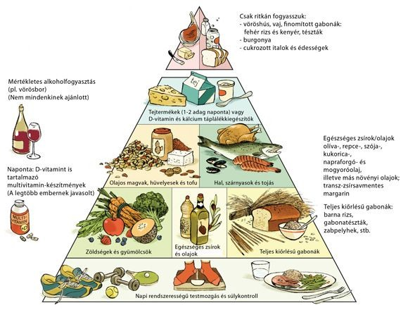

|
Ismerd meg a táplálék piramist!
A táplálékpiramist a táplálkozással foglalkozó szakemberek idõrõl-idõre átírják, és sokat vitatkoznak róla. Az alábbi kép az egyik legújabb táplálékpiramist mutatja, ahol helyet kaptak a teljes kiõrlésû gabonák, és jelentõsen lecsökkentek az állati eredetû fehérjék. A táplálékpiramis általános kiindulási alapnak tekinthetõ a napi élelmiszerek bevásárlásakor is. A táplálékpiramis csúcsa felé haladva egyre kevesebb kell az ott levõ élelmiszerbõl. Az alábbi táplálékpiramisról a csúcs el is hagyható. Nem tudod helyesen étkezel-e? Számold ki testtömeg indexed! |
 |
Testtömeg-index kategóriák
|
TTI kalkulátor |
Kalóriaérték számítás |
A kalóriaérték számító alkalmazásunkkal megtudhatja mennyi kalóriát fehérjét szénhidrátot és zsírt tartalmaznak egyes ételek. |